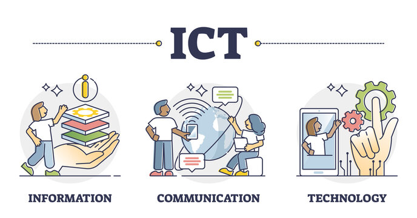

I chose hbo-ict because, I've always had a big interest in everything technological and I want to broaden my knowledge of the ict-field. Hz is also close to where I live and scince it is very diverse I thought it would suit me.
I'm motivated for ict because I've been interested in the ict field for most of my life. when I was younger I always watched videos that had something to do with computers and I also build my own pc and the pc's for my friends.